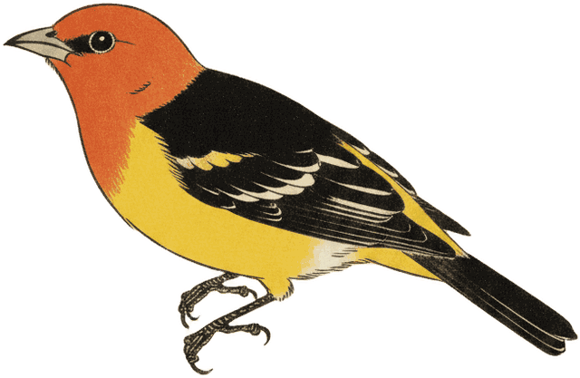

让 Claude 先「采访你」，再动手写 PRD
直接说「帮我写个 PRD」，Claude 只能靠猜，输出往往泛泛。换个说法：让它在动笔前先反问你几个关键问题，等你答完再写。一句话就能把质量拉满。
调研、需求评审、方案设计都适用——信息越完整，产出越贴合你的真实场景，返工更少。
复制即用
写之前先别动手。 请以资深产品经理的视角，一次性问我 5 个最关键的澄清问题 （目标用户、核心场景、成功指标、边界 / 非目标、约束条件）。 我回答后，你再输出完整 PRD。
要点：把「先问后写」写进提示词，是 Anthropic 官方推崇的清晰指令实践；一次批量提问比逐条来回更省事。注意：定时 / 自动任务里 Claude 无法反问，那类场景要把要求一次写全。详见 官方提示工程指南。